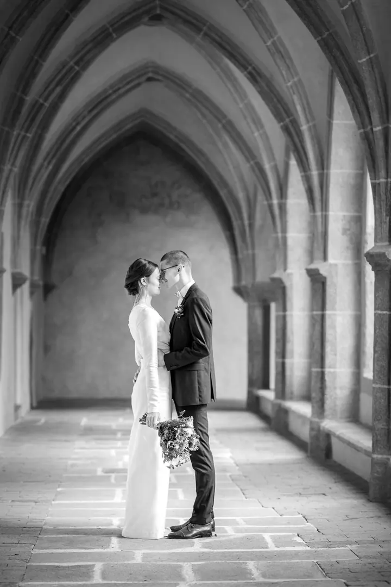
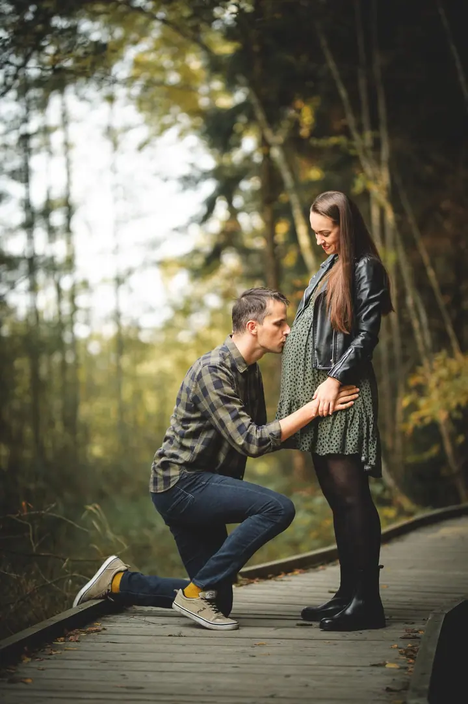
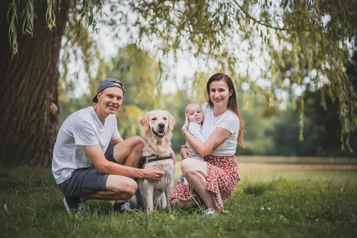

01 / 04
Svatební focení
Tři balíčky od Malé veselky po Celodenní veselku. Vždy se snažím naladit na atmosféru právě vaší svatby a hotové fotky máte do 8 týdnů.
Zeptat se na termín→




Svatby, rodiny i chlupatí parťáci
Zeptat se na termín →(01) Ahoj
Jmenuji se Klára Lipertová a věnuji se focení svateb , rodin a dětí i zvířat . Jsem z Vysočiny, ale ráda za vámi dojedu kamkoliv si budete přát.
(02) Co fotím
01 / 04
Tři balíčky od Malé veselky po Celodenní veselku. Vždy se snažím naladit na atmosféru právě vaší svatby a hotové fotky máte do 8 týdnů.
Zeptat se na termín→02 / 04
Pejsci samotní, psi se svými lidmi i celé vrhy štěňat pro chovatelské stanice. Fotky si sami vyberete z náhledového alba.
Zeptat se na termín→03 / 04
Focení s dětmi dělám zábavné, aby nikdo nebyl v křeči. Těhotenské focení doporučuji zhruba v polovině třetího trimestru, podle toho, jak se cítíte.
Zeptat se na termín→Dále nabízím
Online galerie, fotky připravené pro tisk i sociální sítě a možnost zpracovat highlights ještě v den události. Rozsah a cenu domluvíme na míru vaší akci.
↗(03) Portfolio
Kliknutím fotku zvětšíte · fotografie jsou ilustrační
(04) Postup
Od první zprávy po hotovou galerii.
Krok 1 z 4
Napište nebo zavolejte. Upřesníme si termín a vaši časovou představu o celém dni.
Krok 2 z 4
Když se shodneme, uzavřeme smlouvu a složíte rezervační poplatek, který se odečte od výsledné ceny.
Krok 3 z 4
Sejdeme se, projdeme všechny detaily a můžeme si zkusit i pár společných fotek, ať víte, do čeho se mnou jdete.
Krok 4 z 4
Po svatbě se můžete těšit na hotové fotografie do 8 týdnů ve dvou digitálních galeriích, pro tisk i pro sociální sítě.
Každý pár je jiný a právě to mě na focení baví.
(05) Za objektivem
Fotím děti, rodiny, zvířata, sport a svatby. Každý pár i každá rodina je jiná a právě to mě na fotografování baví. Vždy se snažím vyslechnout vaše přání a naladit se na atmosféru, kterou spolu na focení máte.
Vím, že pro mnoho lidí je představa focení nepříjemná. Společně to ale zvládneme bez zpocených rukou, přirozeně a zábavně. Ať máte rádi momentky, nebo potřebujete poradit, co s rukama, jsem tu pro vás. Sama mám děti, takže vím, že nejlepší snímky vzniknou, když se všichni baví.
Nejvíc mě těší, když je svatba jen začátek naší společné foto cesty a můžu sledovat, jak se vaše rodinné příběhy rozrůstají. Pro dobrou fotku klidně vlezu do rybníka nebo vylezu na skálu.
Klára
Klára Lipertová · Svatební, rodinná a zvířecí fotografka
Mám tři balíčky: Malá veselka za 10 000 Kč (až 3 hodiny), Zlatý střed za 14 000 Kč (až 6 hodin) a Celodenní veselka za 18 000 Kč (až 10 hodin), kde je v ceně i předsvatební focení.
Ano. Jsem sice z Vysočiny, ale ráda dojedu kamkoliv, ať už to budou Budějce, Jizerky, Těšín, nebo úplně jiná země. Doprava do 20 km je v ceně, dál účtuji 6 Kč/km.
Osobně doporučuji plánovat focení zhruba v polovině třetího trimestru. Vždy ale záleží na tom, jak se cítíte.
Určitě. Ráda vám pomůžu s výběrem z vašeho šatníku, abyste se cítili pohodlně a zároveň vznikly co nejhezčí snímky.
(07) Kontakt
Napište pár vět o tom, co si představujete, a termín, který se vám hodí.